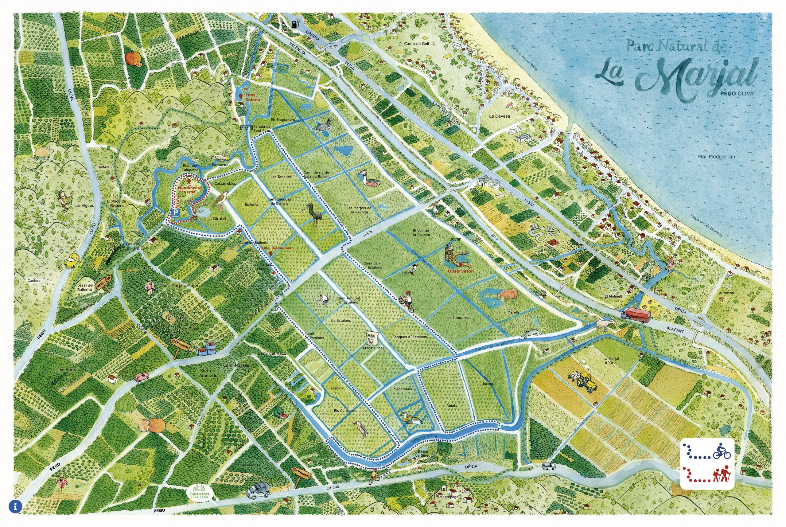

A video of La Marjal
This is an informative video of La Marjal, don't forget to subscribe on the YouTube channel!!!
A map of La Marjal
On this picture we can see the map of La Marjal, if we open the picure we can see the route that we can do with the bike or walking
A table of the routes of La Marjal
| ROUTE | DISTANCE | START | FINISH | DIFICULT |
|---|---|---|---|---|
| CIRCULAR ROUTE RABDELLS | 41,6 km | Tourist Info Oliva | Tourist Info Oliva | Hard |
| RIVER BULLENT ROUTE | 4,2 km | Parking Montanyeta Verda | Blau Del Calapatar | Easy |
| RIVER RACONS ROUTE | 3,5 km | CV-700 | Observatorium Bassa Sineu | Easy |
On this table we can see the routes of La Marjal